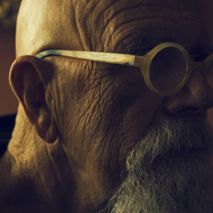
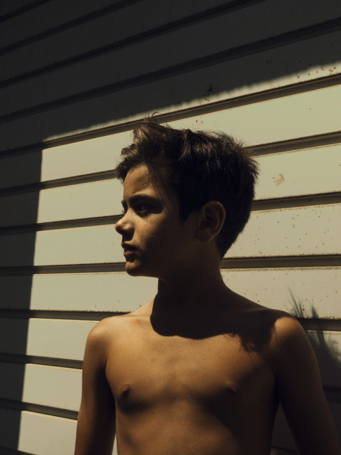
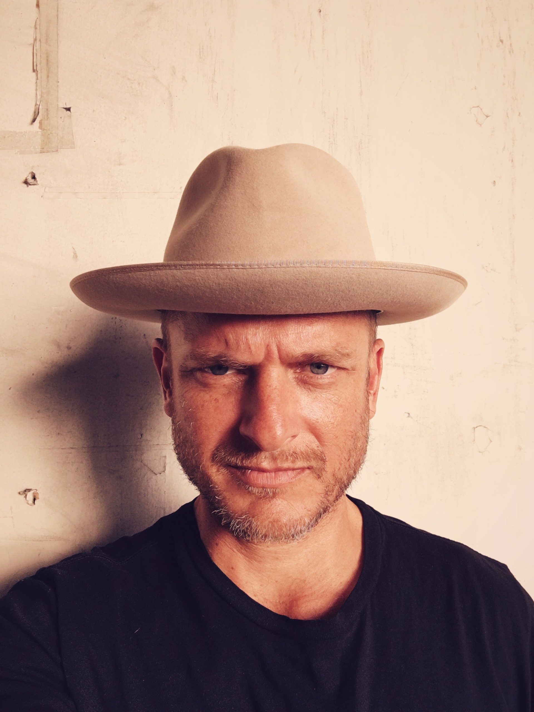

Imágenes

El señor Li

Reflejos
Piel

La ilusión

Mirada joven
Nostalgia

Mirada

Claire

En bucle

La tía Matilda

Biografía
Christopher Anderson nació en Canadá en 1970 y se crió en el oeste de Texas. Logró el primer reconocimiento por sus fotografías en 1999, cuando se subió a un barco hecho a mano con unos refugiados haitianos que intentaban navegar hasta América. El barco, llamado el Believe In God (creer en Dios), se hundió en el Caribe. En 2000 las imágenes de ese viaje recibieron la Medalla de Oro Robert Capa. También marcaron el surgimiento de un estilo cargado de emociones al que Anderson se refiere como «documental experimental» y que ha llegado a caracterizar su obra desde entonces. Christopher es miembro de Magnum Photos y actualmente es el primer fotógrafo residente de la Nueva York Magazine. Es el autor de dos monografías: Nonfiction, publicado en 2003 y CAPITOLIO, publicado en 2009 por RM y nombrado uno de los mejores libros de fotografía de 2009/10 en la Feria del Libro de fotos Kassel en Alemania. En mayo de 2012, publicoó su tercer libro, Bleu Blanc Rouge y SON saldrá a la venta en la primavera de 2013. Este último trabajo es el más íntimo de todos los que ha realizado hasta el momento. Surge cuando enferma su padre y a su vez él mismo se convierte en padre con la llegada de su primer hijo. Anderson siente la necesidad de retratar a su familia de una forma casi orgánica y el resultado es magnífico.
Clientes
Agencia Magnum
"Anderson representa la excelencia y el compromiso"
The New York Times
"Sabe captar el momento con mucha objetividad"
Nike
"No hay duda, Anderson es una apuesta segura"